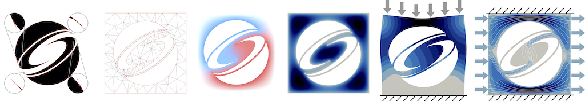
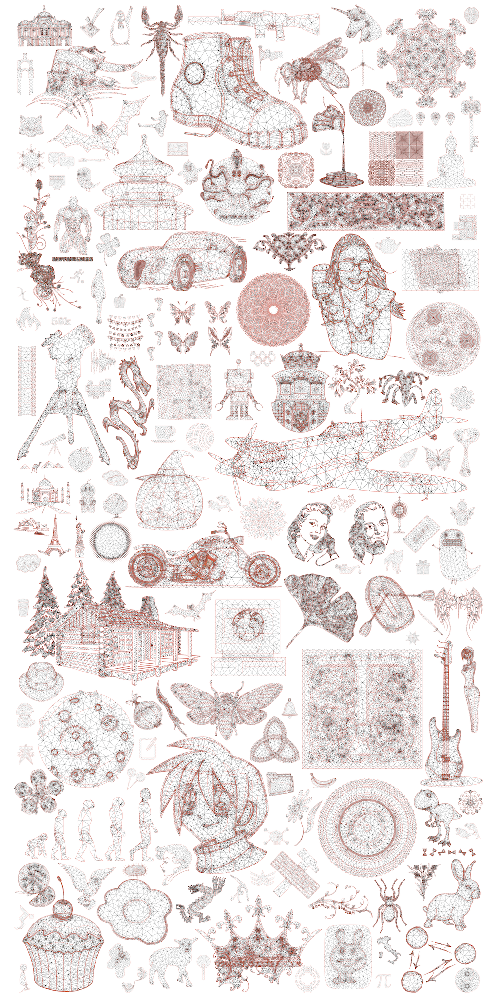

TriWild: Robust Triangulation With Curve Constraints¶

Yixin Hu, Teseo Schneider, Xifeng Gao, Qingnan Zhou, Alec Jacobson, Denis Zorin, Daniele Panozzo. ACM Transactions on Graphics (SIGGRAPH 2019).Check it out 👉 https://github.com/wildmeshing/TriWild.


Important Tips¶
💡💡💡 We also have 3D version of “TriWild” - TetWild! It’s the parent of TriWild. TetWild can generate linear tetrahedral meshes robustly and automatically. Check it out 👉 TetWild.
💡💡💡 If you are interested in the algorithm details, please refer to our paper first. We provide plenty of examples and statistics in the paper.
@article{Hu:2019:TRT:3306346.3323011,
author = {Hu, Yixin and Schneider, Teseo and Gao, Xifeng and Zhou, Qingnan and Jacobson, Alec and Zorin, Denis and Panozzo, Daniele},
title = {TriWild: Robust Triangulation with Curve Constraints},
journal = {ACM Trans. Graph.},
issue_date = {July 2019},
volume = {38},
number = {4},
month = jul,
year = {2019},
issn = {0730-0301},
pages = {52:1--52:15},
articleno = {52},
numpages = {15},
url = {http://doi.acm.org/10.1145/3306346.3323011},
doi = {10.1145/3306346.3323011},
acmid = {3323011},
publisher = {ACM},
address = {New York, NY, USA},
keywords = {curved triangulation, mesh generation, robust geometry processing},
}
💡💡💡 Check our license first.
Dataset¶
💡💡💡 Please kindly cite our paper when using our pre-generated data.
Examples in the Paper¶
Download zip.
💡💡💡Quickly try TriWild on some small exmaples here!!
20k Openclip Dataset¶
Input: 19686 meshes (.obj) each with a curved feature file (.json)
(For your reference, here is original 20k SVG images. Those with animation are not converted to obj/json.)
Output with curved constrains: 19685 meshes (.msh)
Output with linear constrains(todo James): 19686 meshes (.msh)
Installation¶
You can use TriWild either by pulling a Docker image or compiling the source code with CMake.
via Docker¶
Install Docker and run Docker. Pull TetWild Docker image and run the binary:
docker pull yixinhu/triwild docker run --rm -v "$(pwd)":/data yixinhu/triwild /app/TriWild/build/TriWild [TriWild arguments]
via CMake¶
Our code was originally developed on MacOS and has been tested on Linux and Windows. We provide the commands for installing TriWild in Unix OS:
- Clone the repository into your local machine:
git clone https://github.com/wildmeshing/TriWild
cd TriWild mkdir build cd build cmake .. make -j
- Check the installation:
./TriWild --help
Usage¶
Input：
-
Linear constraints (required): segment soup in
.objformat. -
Curved constraints: Bezier curves in
.jsonformat.
Output: Linear/high-order triangle mesh in .msh format.
Please check dataset above for examples.
Quick Try¶
You can try TriWIld quickly with default parameters by running
./TriWild --input input.obj
./TriWild --input input.obj --feature-input input.json
Command Line Switches¶
Usage: ./TriWild [OPTIONS]
Options:
-h,--help Print this help message and exit
--input TEXT (REQUIRED) Input segments in .obj format.
--output TEXT Output path.
--postfix TEXT Add postfix into outputs' file name.
--feature-input TEXT Input feature json file.
--stop-quality FLOAT Specify max AMIPS energy for stopping mesh optimization.
--max-its INT Max number of mesh optimization iterations.
--stage INT Specify envelope stage
--envelope-r FLOAT relative envelope epsilon_r. Absolute epsilonn = epsilon_r * diagonal_of_bbox
--feature-envelope-r FLOAT Relative feature envelope mu_r. Absolute mu = mu_r * diagonal_of_bbox
--target-edge-length FLOAT Absolute target edge length l.
--target-edge-length-r FLOAT
Relative target edge length l_r. Absolute l = l_r * diagonal_of_bbox
--log-file TEXT Output a log file.
--min-angle FLOAT Desired minimal angle.
--mute-log Mute prints.
--cut-outside Remove "outside part".
--skip-eps Skip saving eps.
--cut-holes TEXT Input a .xyz file for specifying points inside holes you want to remove.
--output-linear-mesh Output linear mesh for curved pipeline.
More details about some important parameters:
--feature-input
We provide a python script for converting a svg to curves in .json format.
--envelope
Relative surface envelope \epsilon_r (1e-3 in default). Absolute surface envelope \epsilon_r d, where d is the length of the diagonal of the bounding box of input.
--feature-envelope
Relative feature envelope \mu_r (1e-3 in default with linear constraints and 2e-3 for curved constraints). Absolute feature envelope \mu = \mu_r d.
--target-edge-length-r
Relative targeted edge length \ell_r (0.05 in default). Absolute targeted edge length \ell = \ell_r d.
License¶
TriWild is MPL2 licensed and free for both commercial and non-commercial usage. However, you have to cite our work in your paper or put a reference of TriWild in your software. Whenever you fix bugs or make some improvement of TriWild, you should contribute back.
Gallery¶
